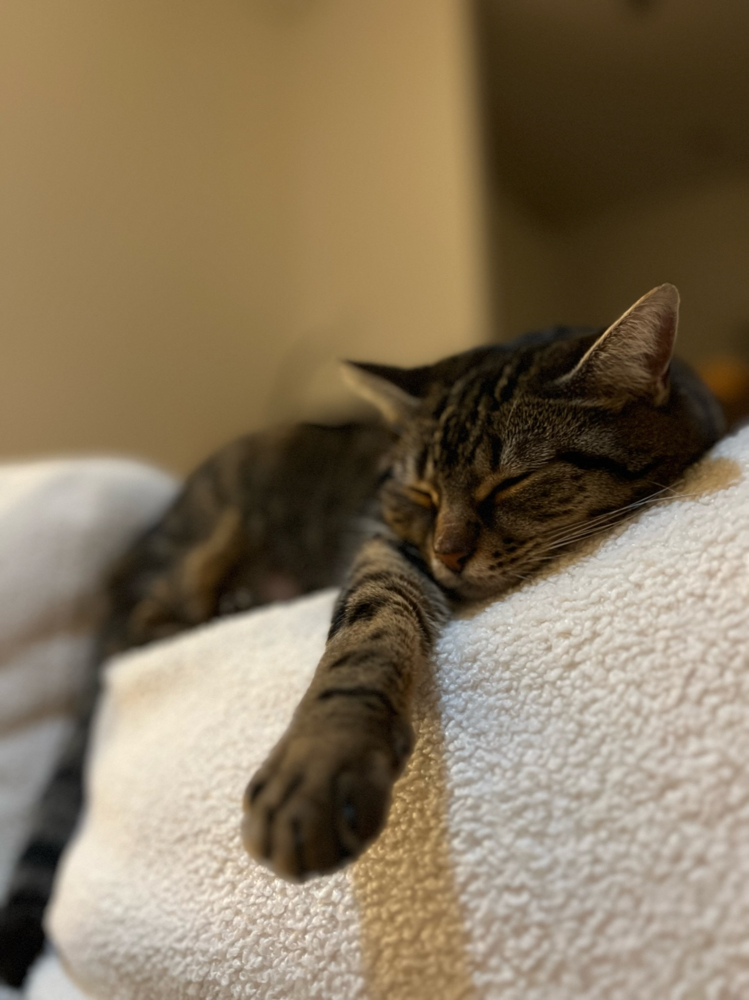
I guess I am Senna? but honestly, who cares? my journey with her began in a small studio.
I'm 7 years old , and I've learned to appreciate the good things in life. Sunshine naps, perfectly clean fur.
However, this human talks in three whole languages, her attempt to chat with me in all those tongues just get ignored. All she wants is attention pfffff
Don't get me wrong, I put up with her. She does scratch my chin sometimes, and her lap is surprisingly comfy. Anyway, welcome to my world, hairless friend. Get ready to be ignored with total class.
About me
First name: Senna or *決明子
Last name: Chen (yes she made me took her last name)
Meaning of the name: Live Long and Prosper.
Origin: I guess France, not sure if she's from the nord.
Race: Tabby
Birthday: 17.03.2017
*決明子的功效:
Sunbeam Snoozes:
 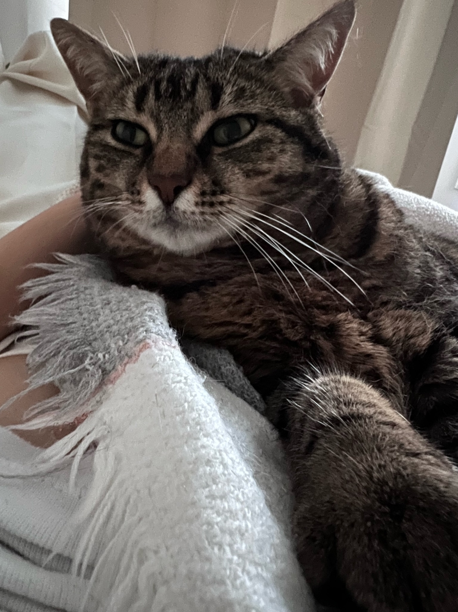
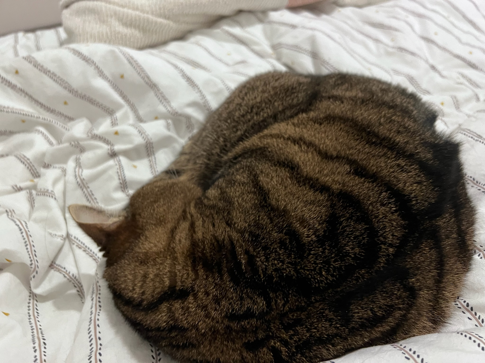
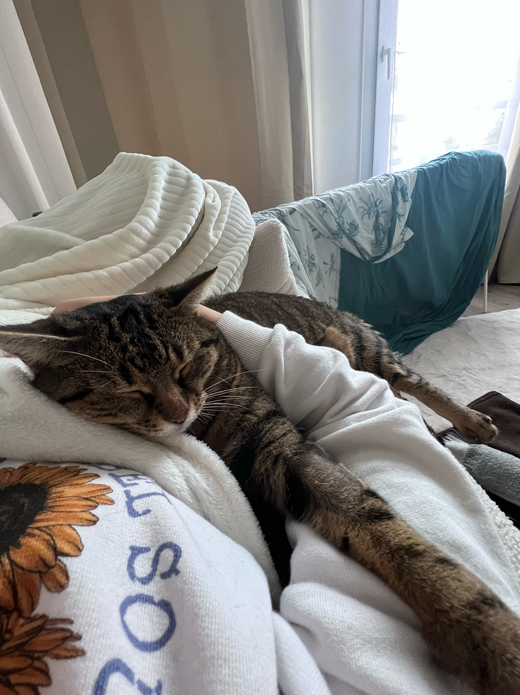
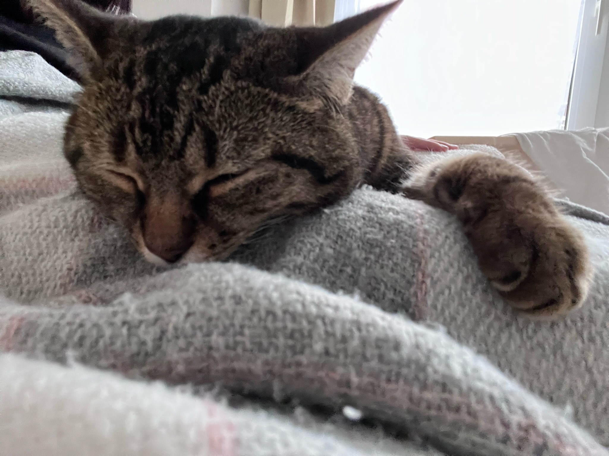
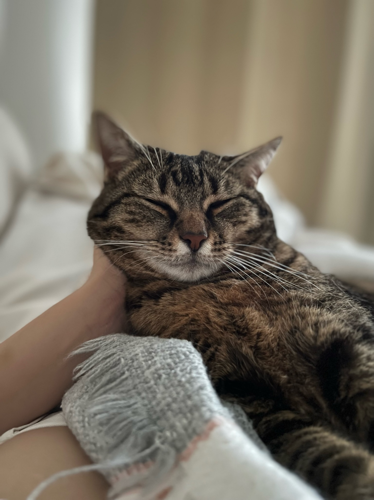
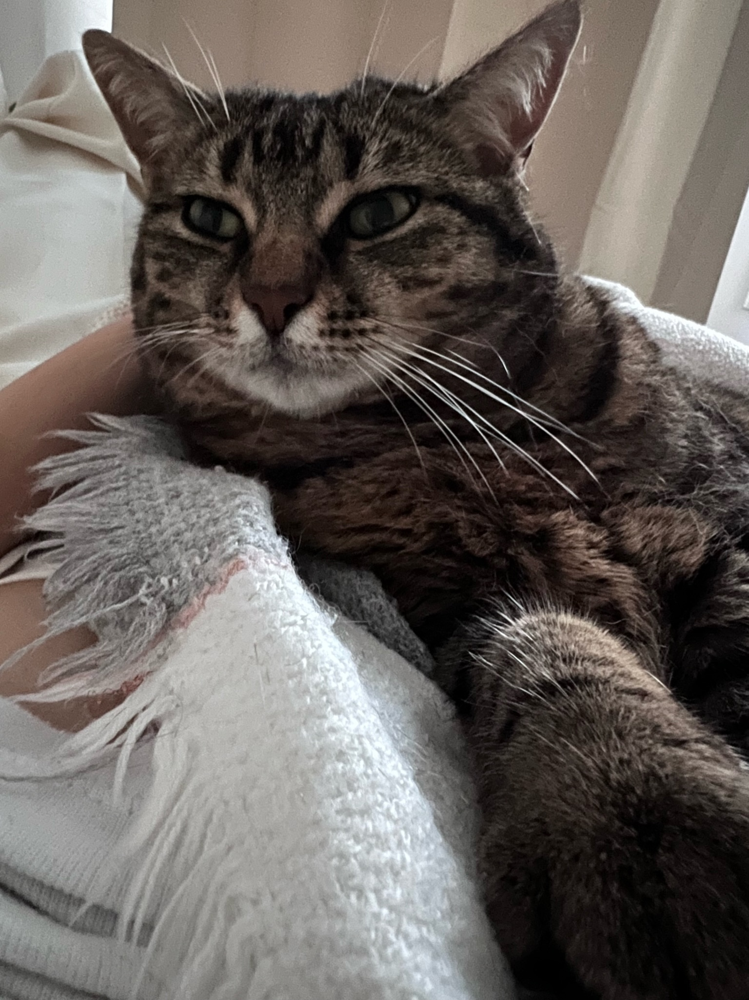
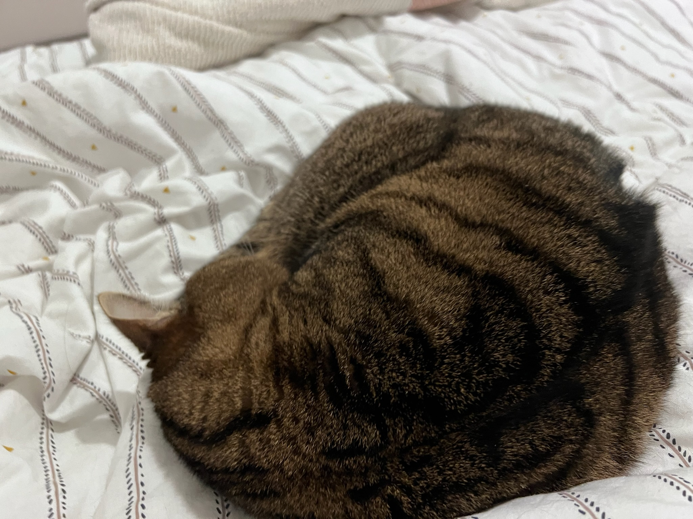
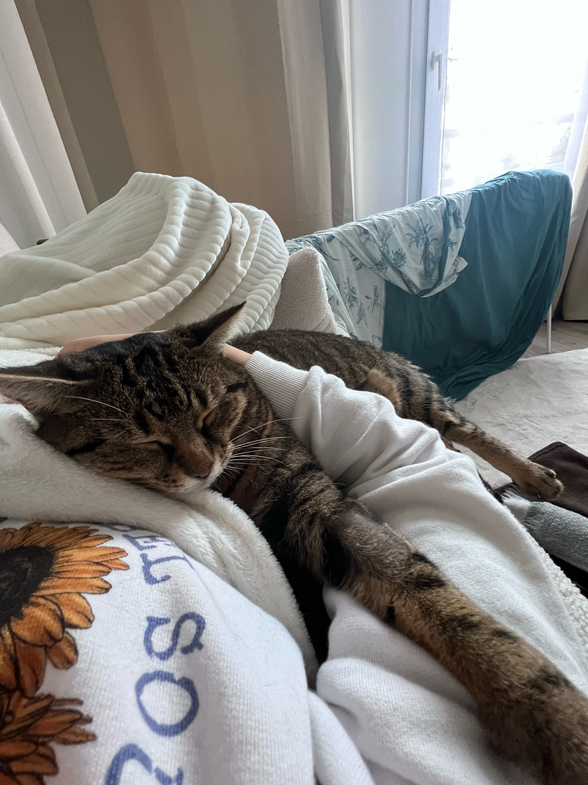
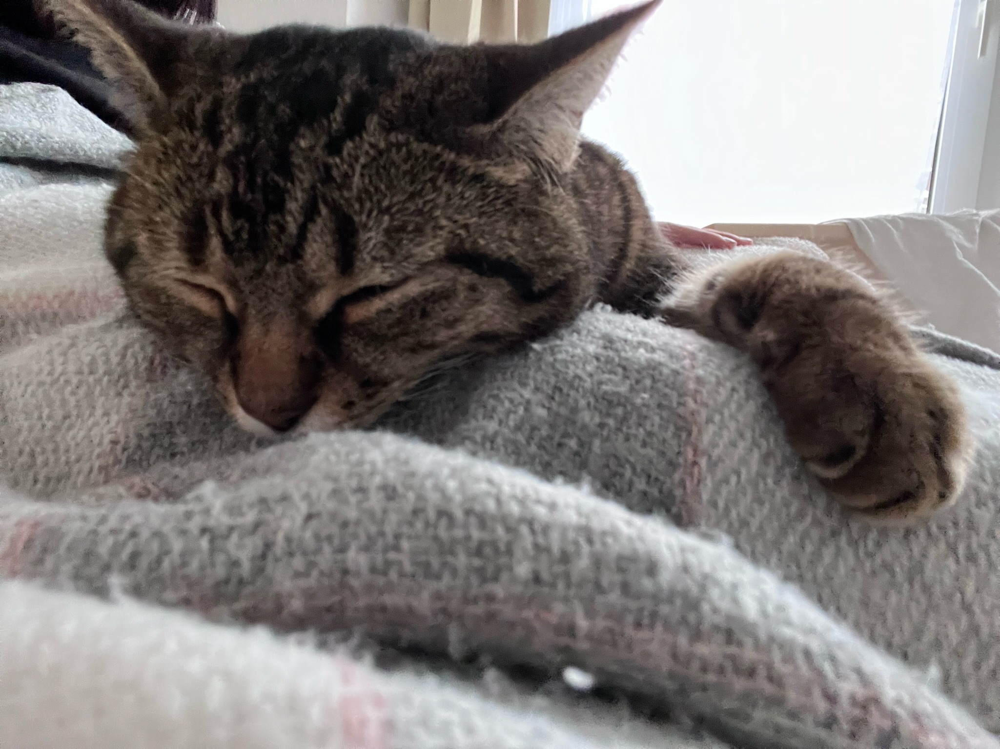
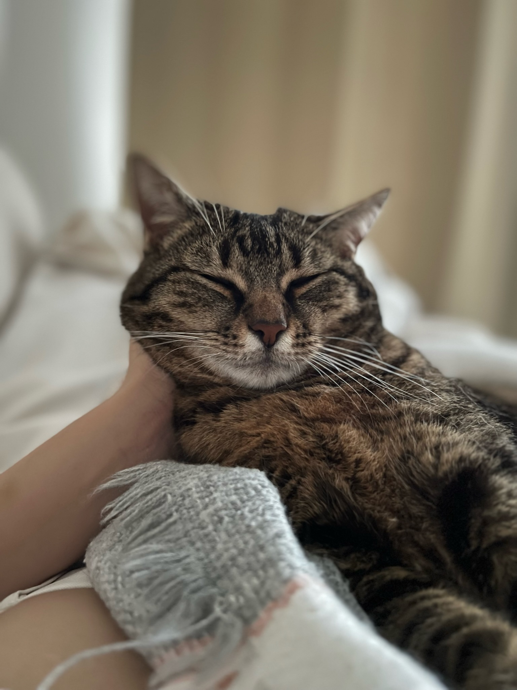